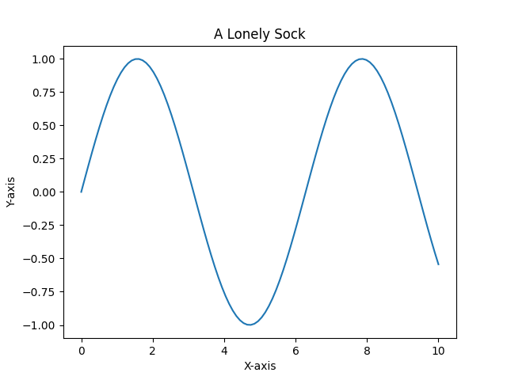

En ensom sokk, blå og slitt, ligger der, et stille slit. Hvor er den andre, vet du tro? Kanskje på en reise, godt og ro.

import matplotlib.pyplot as plt
import numpy as np
# Generate some random data for the plot
x = np.linspace(0, 10, 100)
y = np.sin(x)
# Create the figure and axes object
fig, ax = plt.subplots()
# Plot the data
ax.plot(x, y)
# Set the title and labels
ax.set_title('A Lonely Sock')
ax.set_xlabel('X-axis')
ax.set_ylabel('Y-axis')
# Save the figure
plt.savefig(output_path)execution_ok=True fallback_used=False image_ok=True